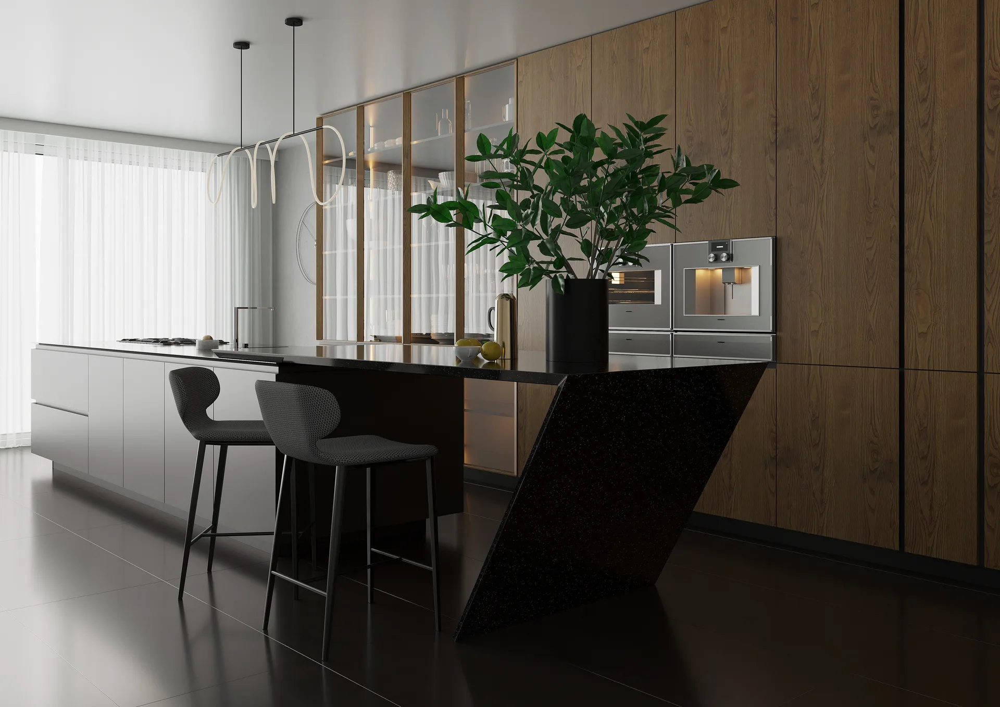
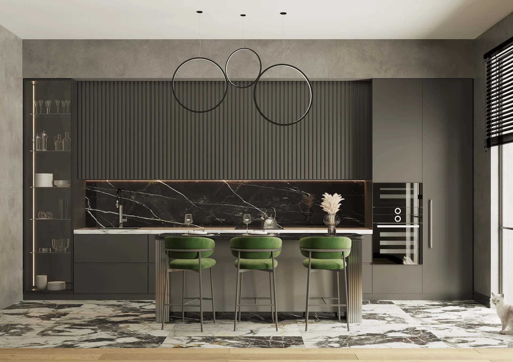
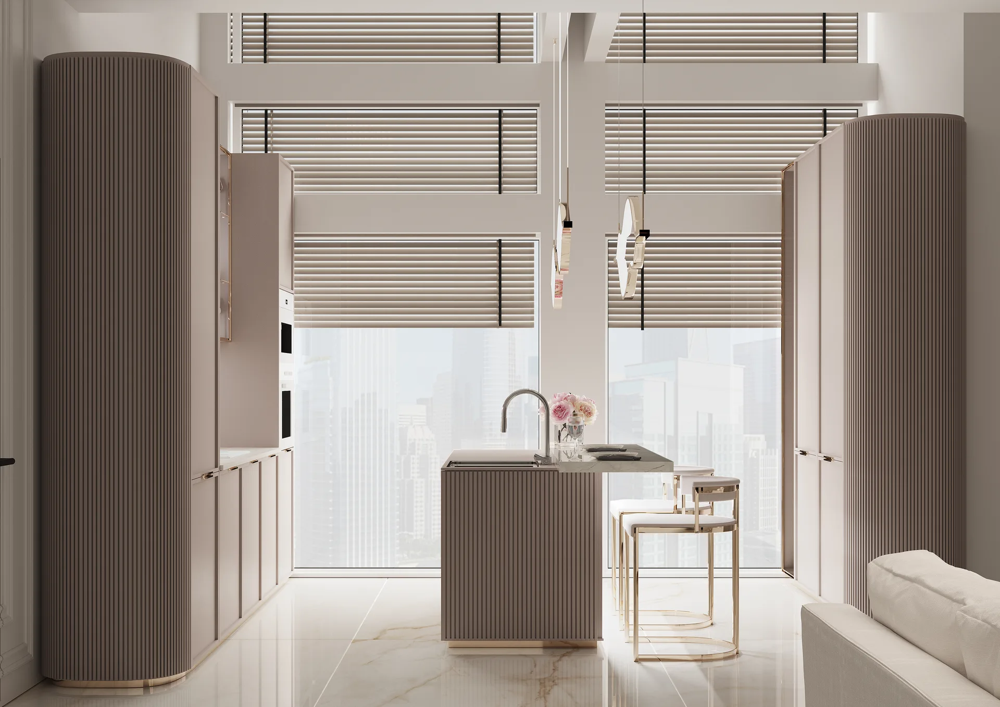

Под вашу планировку
Прямые, угловые, П-образные кухни и композиции с островом — без привязки к типовым модулям.
Кухни REMIZ · Москва и область
Продумываем планировку, хранение, свет и материалы вокруг вашей семьи и реального пространства — от первого эскиза до точного монтажа.
Прямые, угловые, П-образные кухни и композиции с островом — без привязки к типовым модулям.
Сравниваем эмаль, шпон, стекло, камень и фурнитуру по образцам, освещению и сценарию эксплуатации.
Дизайнер, технолог, производство и монтажники отвечают за результат в единой спецификации.



Посмотрите реализованные решения в портфолио REMIZ или обсудите планировку с дизайнером в шоуруме.